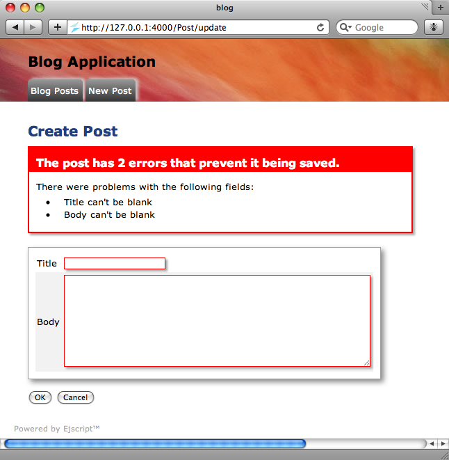

Database Models
Ejscript Models are responsible for managing access to application data and for ensuring the data remains valid and consistent.
Ejscript Models are the Object Relational Mapper (ORM) layer provided with Ejscript. This layer wraps database records in JavaScript objects and allows you to use object-oriented programming (OOP) when dealing with tabular database data.
Record Class
Ejscript Models map database tables to classes, rows to objects, and columns to object properties. The foundation for Models is the Record class. Record instances represent database records. New models are created by implementing the Record class.
public dynamic class Product implements Record {
setup()
function Product() {
}
}
This creates a new Product model for accessing the Products table. Note: we did not have to specify the table, column or primary key names names. Ejscript follows the Convention over Configuration design paradigm where developers need only specify the unusual parts of their application. In this example, Ejscript will look for a database table named Products and will map that to the Product class. By convention, Ejscript assumes that database table names are plural and Record classes are singular. You can override this if you need to by calling the setTableName Record method. However, it is best to work with the Ejscript conventions and defaults — life is much easier this way.
Columns to Properties
Ejscript dynamically determines the column names in the database table and creates object properties at run-time corresponding to each column. You do not need to create or specify the columns in your Record class. Ejscript will determine the appropriate column type for you.
Quick Tour of Record
Assume we have a database with a Products table that has columns for id, name, description and price.
| id | name | description | price |
|---|---|---|---|
| 1 | Ball | Bouncing ball | 7.50 |
| 2 | Hat | Sun Hat | 27.50 |
By convention (again), columns are lower case. Table names should be plural with the first letter capitalized. The following code demonstrates some typical uses:
/* Read the first product */
product = Product.find(1)
print(product.name + " price is " + product.price)
/* Increase the price by $1.00 and save back to the database */
product.price += 1
product.save()
/* Find products costing over $10.00 */
products = Product.findWhere("price > 10.00")
print(products)
/* Read all products */
products = Product.findAll()
/* Print the number of rows in the database */
print(Product.getNumRows())
/* Remove the product with id == 1 */
Product.remove(1)
Data Types
JavaScript is a loosely typed language which is ideal for a dynamic ORM framework like Ejscript. When reading database data, Ejscript will select the best JavaScript type to hold the database data. The following type conversions will occur when reading and writing data to and from the database. Note: Mysql is not yet fully supported.
| Ejscript Type | SQLite Type | Mysql |
|---|---|---|
| Boolean | ByteArray | Tinyint |
| ByteArray | Blob | Blob |
| Date | Date | Date |
| Number | Real | Decimal, Real |
| String | Text | Text |
Table Keys
Ejscript assumes that database tables will have a primary key column named id. If you need the primary key column to be some other name, use the setKeyName method.
Database Connections
Database connections are one of the few items that are setup by configuration files. The application configuration file: "config/database.ecf" defines the database name, username, password and other configuration parameters.
debug: {
adapter: "sqlite3",
database: "db/carmen.sdb",
username: "",
password: "",
timeout: 5000,
trace: true,
},
This is an excerpt from the debug database configuration. Currently, Ejscript only supports the SQLite database. The database option is set to the filename of the database. Setting trace to true will trace all SQL statements that are executed against the database to the application log.
Creating Model Classes
The Ejscript mvc command can be used to generate models and database migrations.
mvc generate model [field:type ...]
When generating a model, mvc will create a database model class and a database migration script.
If field:type pairs are supplied, the database migration will include code to create a column for each specified field of the requested type. The valid database types are: binary, boolean, date, datetime, decimal, float, integer, number, string, text, time, timestamp.
Once the model is generated, you can add methods to implement logic to manage updates and validate model data. Models typically provide a suite of methods for controllers and views to access.
Create, Read, Update and Delete
It should be easy to do simple things like implementing the basic database operations: create, read, update and delete. Ejscripts Models make this easy.
Create a new Record
To create a new table record:
product = new Product product.name = "Race Car" product.description = "Bright red race car" product.price = 19.99 product.save()
That will create a new product, initialize its properties, and save it to the database.
Reading a Record
Reading a record from the database is done with the find family of Record static methods. The basic find method will return a record with a given id field. Other find methods include: findAll, findWhere and findOneWhere. These provide powerful query capabilities and are able to do conditional queries and table joins.
product = Product.find(2)
product = Product.find(null, {conditions: ["price > 5.0"]})
Updating a Record
To update a record, first read it using one of the find methods. Then update any of the object properties. Finally, call the save method to save the changes to the database.
product = Product.find(3) product.name = "Stock Car" product.save()
Deleting a Record
Records have a static method remove which will remove the record with the given primary key id.
Product.remove(1)
/* Search, then remove */
id = Product.findWhere('name == "Stock Car"')
Product.remove(id)
Manual SQL Statements
Ejscript supports the execution of manual SQL statements and provides routines to assist the creation of SQL statements. The getDb method will return a Database object on which, manual SQL queries can be performed
db = Product.getDb()
db.query("SELECT * FROM Products WHERE id >= 1;")
Assisted SQL
The find methods can assist to create SQL statements via an options parameter that takes a set of SQL-like modifiers. Ejscript Records use these when building the SQL statements to implement a query. For example:
Product.findAll({order: "price DESC", limit: 2})
This will find up to two products, and will sort the result grid by descending price. Other options include: group, limit, offset and joins.
Accessing Models
Ejscript Controllers and Views are the primary users of model data. Controllers will typically interact to create, read, update, and delete model data. Views will typically (or should) use read-only access.
There are several means by which model data can be provided:
- Direct model access
- Binding a model to a View Control
- Controller facilitated model access
Direct Model Access
In direct model access, controllers or views query the model using a find method to return a record object instance. They then directly access the model via object properties. Views can directly insert these values into web pages and controllers can use them just like any JavaScript property.
<p>Price: @@Product.find(1).price </p>
This is a fragment from a View that directly accesses the model to extract the price for the first product. The @@ is the way Views can substitute dynamic data from JavaScript variables at run-time.
Bound Access
Ejscript models can also be bound to View Controls for easy display. Many of the View Controls can take a model instance as a parameter with options to select the properties to display. The table View Control method is a good example. It can bind to a model and, via a one-line statement, display the table. It has options to sort, filter, and select columns and dynamically refresh the table contents as the underlying database data changes.
<% table(Products.findAll(), {
click: "edit",
columns: {
name: { },
description: { },
price: { render: currency("$$%,d") },
},
width: "80%",
}) %>
This will display a View containing a table of the products.
Controller Facilitated Access
Controller facilitated access is perhaps the most powerful access methodology whereby the controller creates a suite of methods to manage and control access to the model. These methods can then validate and enforce consistency checks on the data.
Validation
Ejscript provides a validation mechanism that is invoked prior to saving a model to the database. It also provides a set of pre-defined validation methods that you can use in your model. These cover the most common validation needs such as ensuring a field is unique or numeric, or conforms to a specific format.
When a validation check fails, an error message is added to the model for the field that failed validation. Validation checks continue and (potentially) a set of error messages for the model are accumulated. Views can access these messages for display and highlighting to the user. The standard Ejscript view controls intelligently use these error messages to highlight errors in input forms.
Ejscript will also automatically verify and convert model data to ensure it is of the appropriate data type and will escape data to prevent SQL insertion exploits.
Validation Methods
The following validation methods are available for use inside a model. Define these in the class initialization section of your class so they run when the class is first created.
public dynamic class Task implements Record {
setup()
validatePresence(["name", "description"])
validateUnique("name")
validateNumber("priority", { message: "Priority must be a number"})
validateFormat("fax", { message: "Bad format", format: /\d{3}-\d{7}/})
The validation methods take either a field name or array of field names as the first parameter. The second parameter is an options hash which can contain a message option to override the standard validation failure message.
validatePresence
This validates that the field is defined with a non-empty value.
validateNumber
This validates that the field is a number and only contains numeric digits.
validateUnique
This validates that the field's value is unique in the database.
validateFormat
This validates that the field's value conforms to the regular expression format supplied via the format option.
Custom Validation
In addition to the standard validation methods, a model can do custom validation by defining a validation method. This will be called along with the standard validation methods before saving database data or when the validateModel method is called. A validation method should call the error method for each invalid field and supply a suitable message.
public function validate() {
if (user.phone.length > 10) {
error("phone", "Phone number too long")
}
if (someGeneralError) {
error("", "General validation failure")
}
}
To set an error that is not associated with any specific field, supply the empty string as the field argument.